I am an experimental filmmaker, animator, poet, writer, and collage artist working across cinema, literature, and interdisciplinary media. Born and raised in Iran, I hold an M.F.A. in Filmmaking from Syracuse University, an M.A. in Dramatic Literature from Tarbiat Modares University in Tehran, a B.A. in Cinema, and an Associate Degree in Graphic Design.
I am currently an instructor in Film and Media Arts at Syracuse University, where I teach Making Media: Fundamentals and have served as a teaching assistant and mentor across undergraduate and pre-college programs. In Iran, I taught performing arts and art history, guiding students in filmmaking, performance, literature, and creative expression.
My work explores identity, trauma, exile, womanhood, and displacement, connecting personal and collective histories. Through literature, collage, experimental film, animation, VR, installation, and performance, I create spaces where fragmented identities, memories, and voices come into dialogue.
I have received numerous awards, including the Philip K. Davis Award and the M.F.A. Show Award from Syracuse University, multiple Creative Opportunity Grants, Best Film awards from the Fanoos and International Film Festival for Children and Youth, and Best Screenplay from the Hasanat Short Film Festival. My poetry has appeared in DoveTales, Straylight Journal, Artifact Nouveau, A Narrow Fellow, Ghost City Review, and anthologies including Infinite Dream and Viver Sem Fronteiras. My poetry collection Eu Não Sou Um Anjo (I Am Not an Angel) was published in 2020 by Amazon Brazil. I have twice been named a Top Ten Poet by the Zhale Esfahani Poem Foundation at SOAS, University of London, and received Elite Artist Recognition from the Provincial Government of Yazd, Iran, as well as the First Young Writer Award.
My work has been featured in exhibitions such as Liminal Cartographies (Brooklyn, New York), the M.F.A. Show at the Warehouse Gallery (Syracuse, New York), and Memories in Transit (Syracuse, New York). As a cultural organizer, I have directed the Simurgh Festival at the Syracuse International Film Festival, served as a jury member for the Hasanat Film Festival in Iran, and organized exhibitions and cultural events in my hometown.
Across my diverse practice, I explore the intersections of storytelling, media, and identity—bridging cinema, literature, virtual reality and visual art to reclaim silenced voices and reimagine fragmented narratives.
Education
- M.F.A, Syracuse University
- M.A., Tarbiat Modares University
- B.A., Sepehr College
- Associate Degree of Fine Arts, College of Nabi Akram (UCNA)


 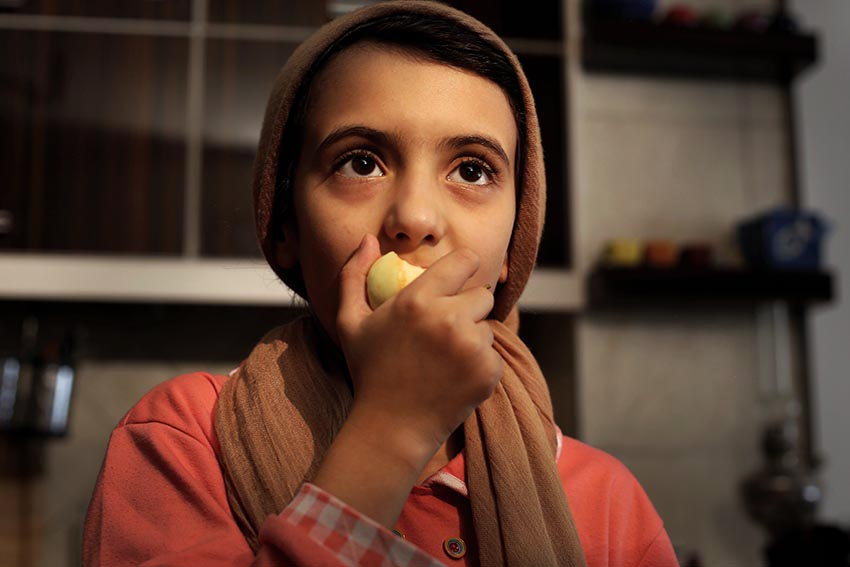
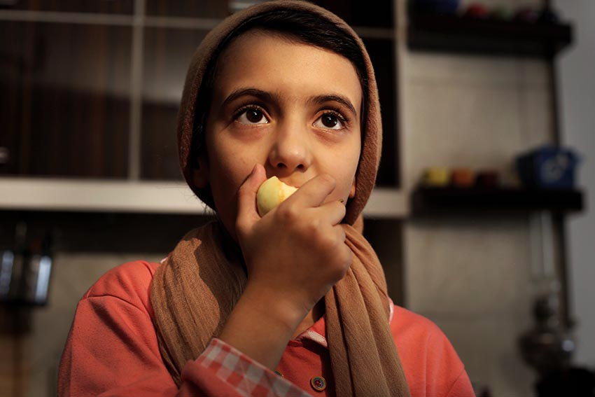

 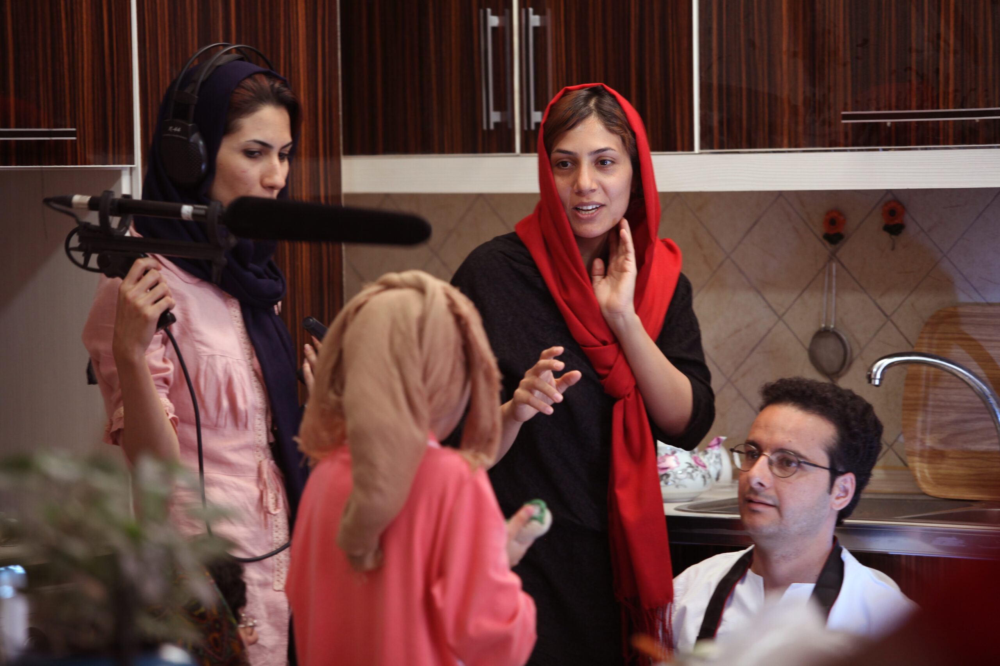
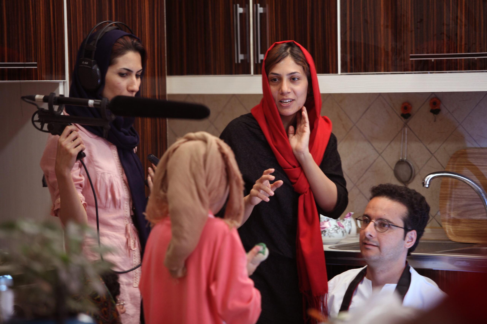


 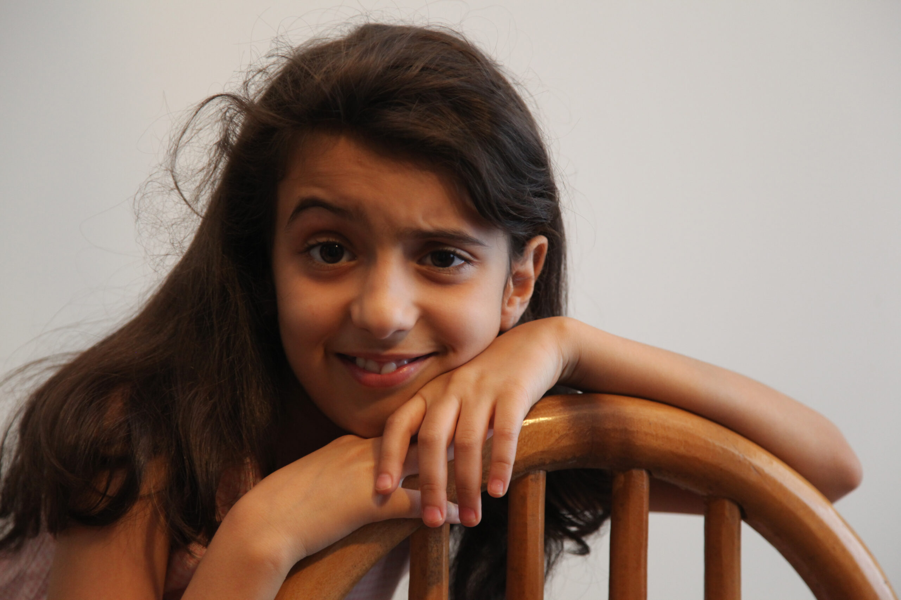
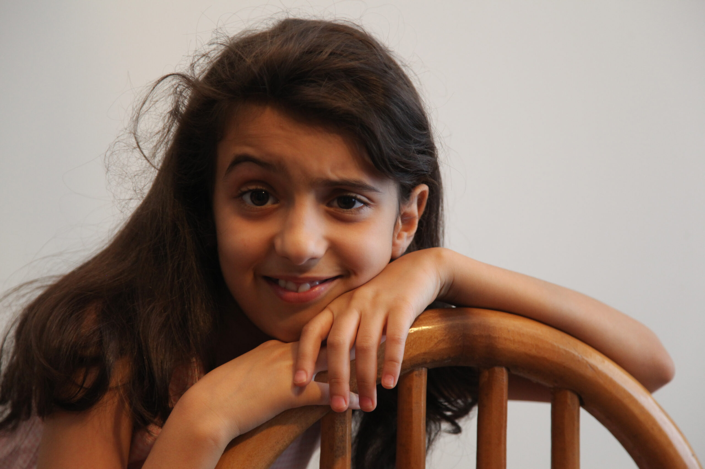
 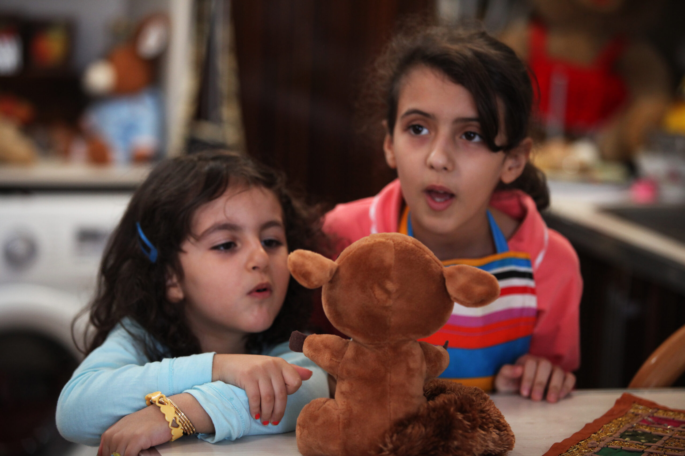
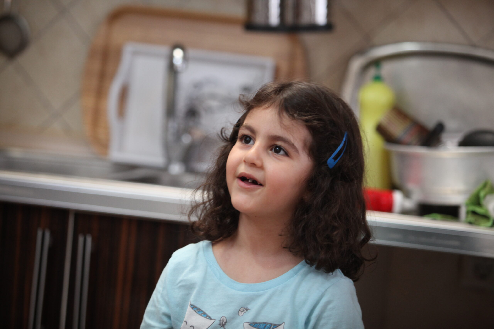
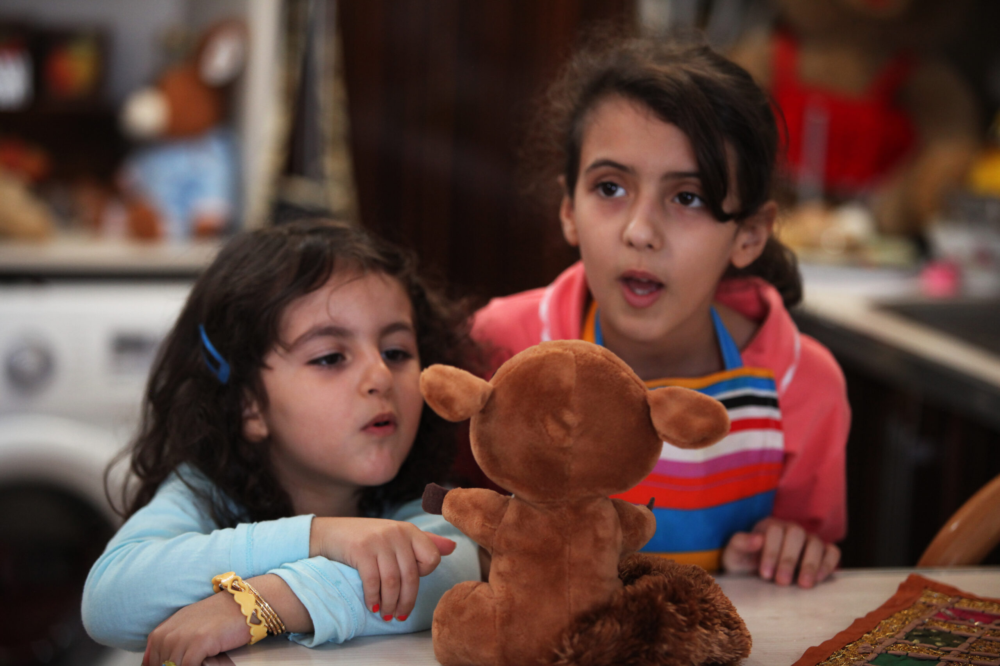
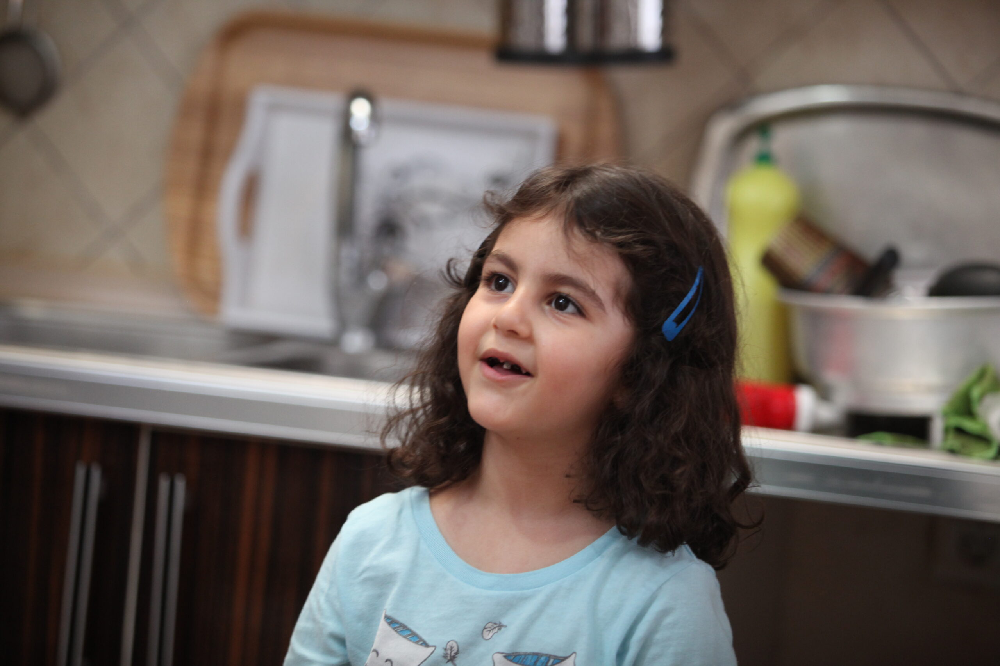

 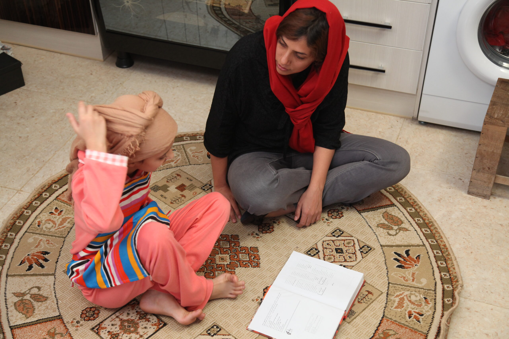
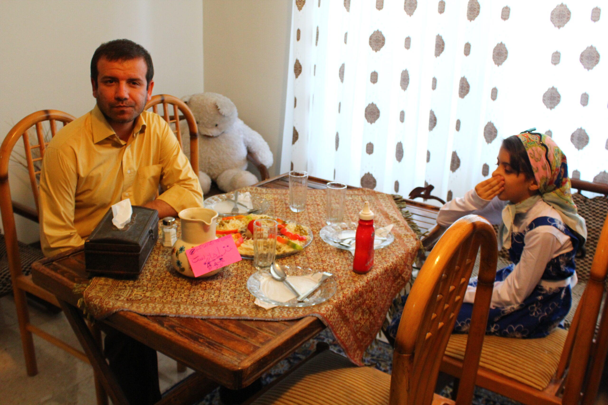
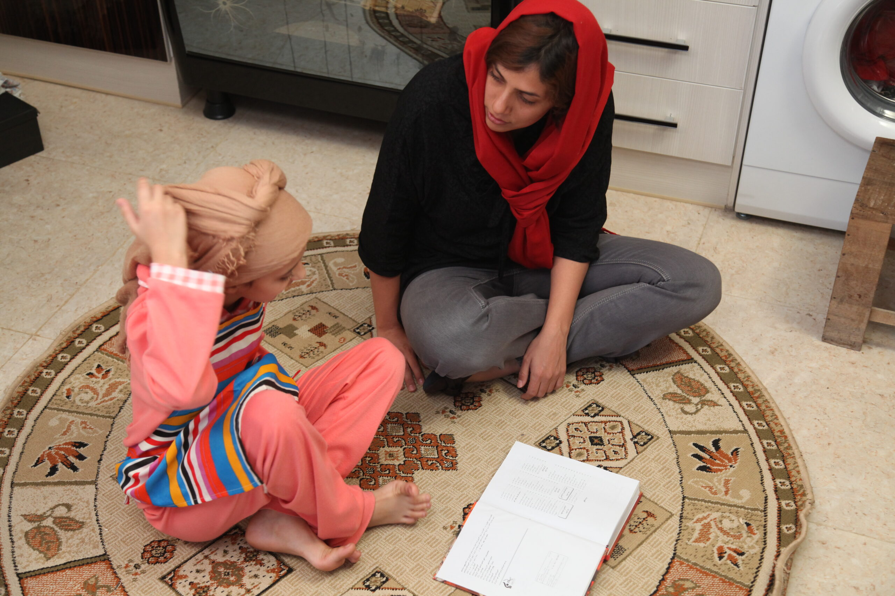
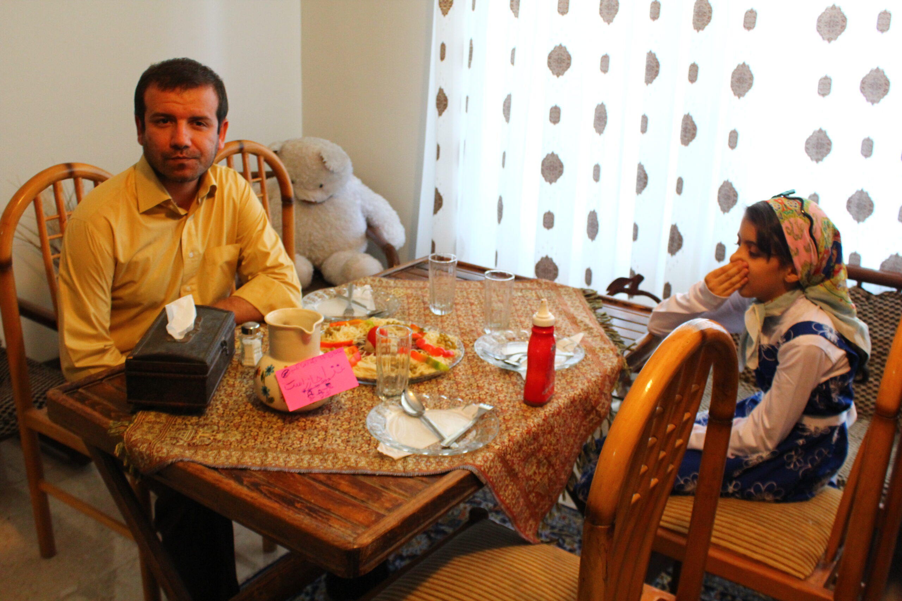